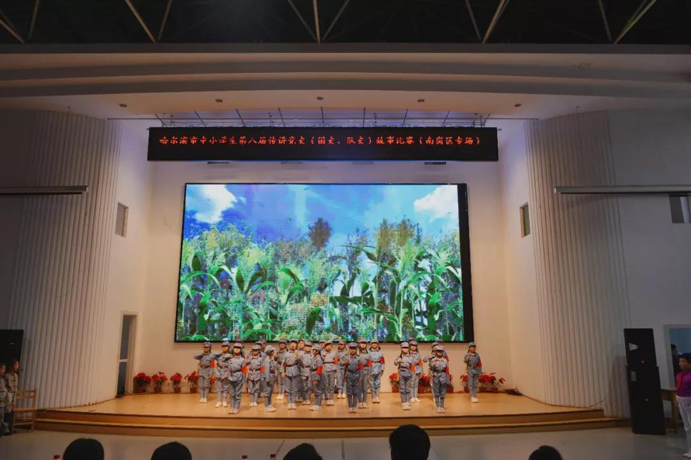
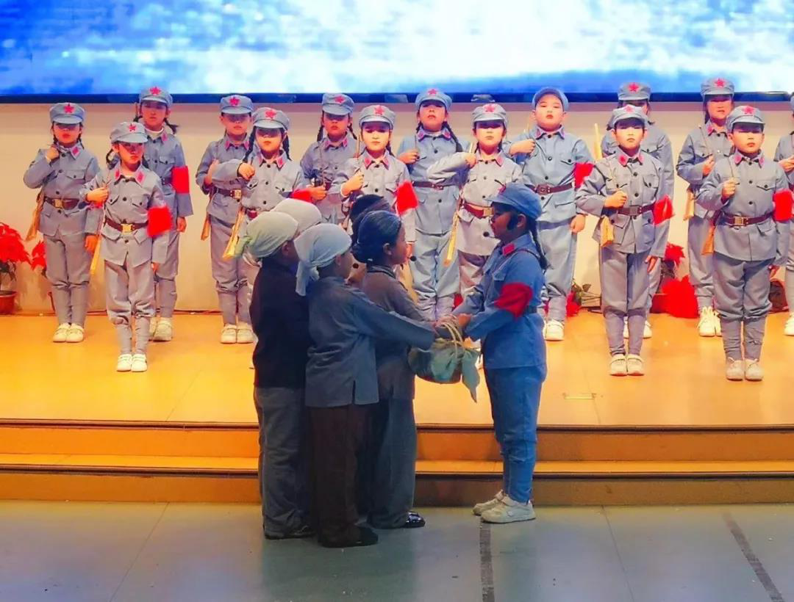
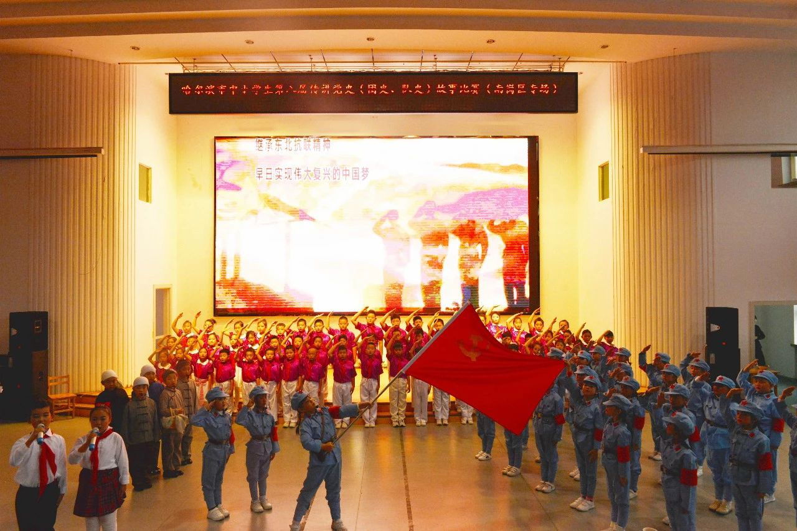
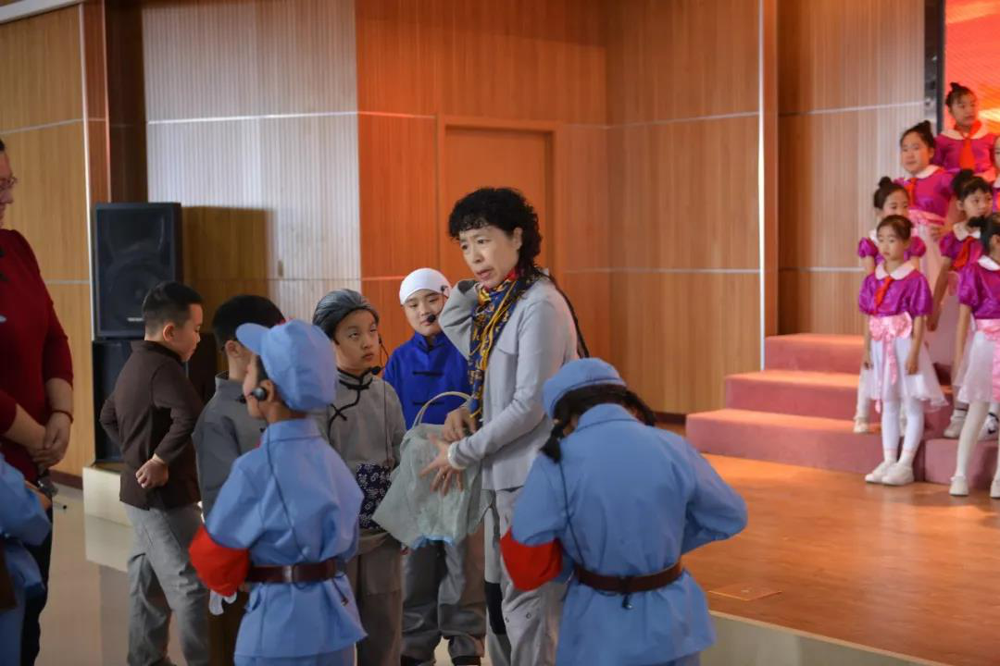
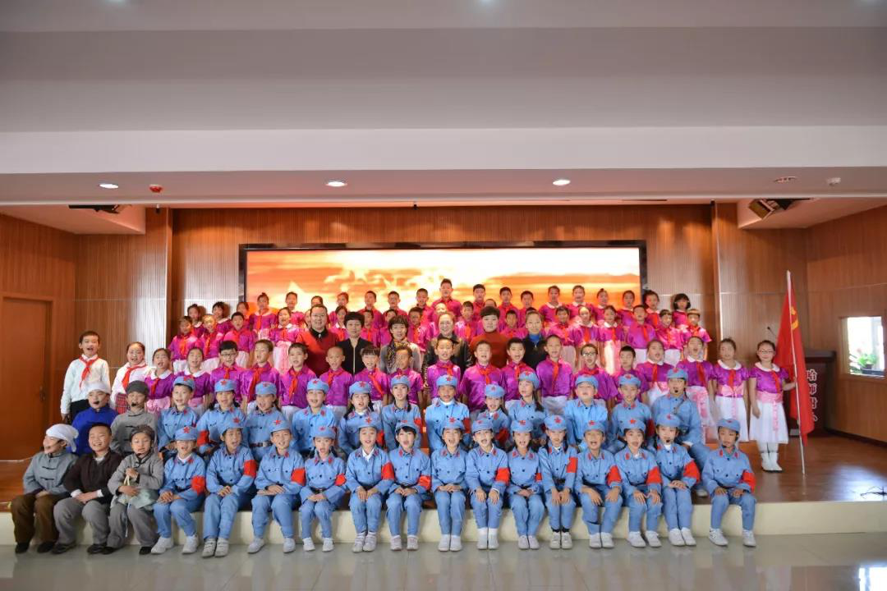
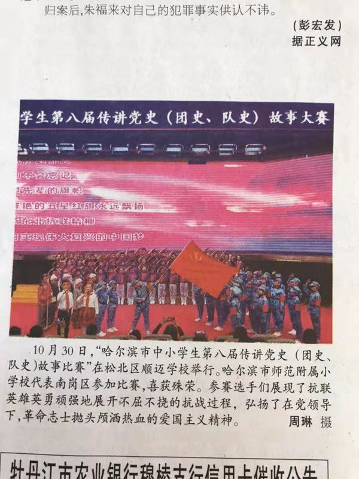

讲党史故事 弘扬红色精神——师范附小代表队参加南岗区中小学生第八届传讲党史（团史、队史）故事大赛
以史为鉴，可知兴替。传讲党史故事，了解伟大中国共产光辉奋斗历程，传承红色精神。哈尔滨市师范附属小学校代表队由3年18和3年23班组成，呈现出一台精彩的歌舞情景剧《抗联赞歌》。

本次参赛，全校组织了召开了以此为主题的主题班会，并在众多班级中选出两个班共同组成代表队参加本次南岗区比赛。班主任周琳、刘莉莉两位老师多次商讨剧本的内容与主题，最后选定了发生在家乡，由党领导的东北抗联的战斗故事为素材，原创了歌舞情景剧剧本《抗联赞歌》。作品歌颂了东北抗联部队顽强不屈、英勇善战的精神，弘扬了在党领导下，革命志士抛头颅洒热血的爱国主义精神。三年级小同学们的表现更是出神入化，生动刻画了指导员的光辉形象。


在紧张的排练中，校领导给予了大力支持和现场指导。梁玉祯校长、韩吉青书记亲自指导同学们的表情和动作，为整体表演出谋划策。孙丽娟主任积极协调各项事宜，保证排练顺利进行。曹雅楠主任也多次亲临排练现场，指导打磨表演细节，为孩子加油鼓劲。台上三分钟，台下十年功。排练的时间紧，任务重。在两位班主任老师的带领下，学生们克服一切困难，反复推敲台词，训练表情动作。

舞台上学生们生动的表演，到位的动作，富有感染力的语言，整齐有力的舞蹈，振奋人心的合唱，变化的音乐和背景的渲染，仿佛带我们走进了那个战火硝烟得年代，生动演绎了在中国共产党领导下的东北抗联战士，同日本侵略者浴血奋战，不屈不饶的战斗精神。孩子们精彩的表演与昂扬的激情感染了每一位老师和学生，赢得了雷鸣般掌声！
本次活动，学生们了解了更多的党史（团史、队史）故事和民族英雄。体会到了今天的幸福生活来之不易。感受到了中国共产党艰苦卓绝、不屈不饶的奋斗精神。激发了附小学子对党，对国家的热爱之情，引领了附小学子不忘党恩，跟党前行，争做新时代的好少年，为中华民族伟大复兴贡献力量！

